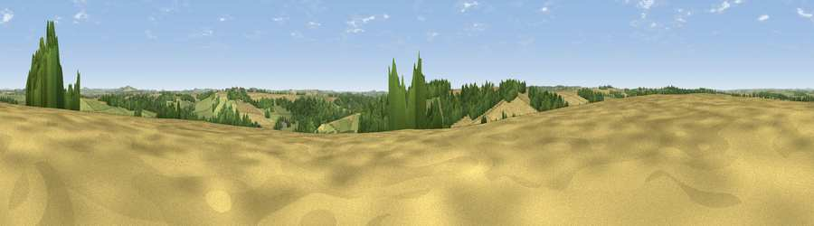

Viewpoint near Upper Woodford
#21992 in England · top 32% of its area beats it · near Upper WoodfordThe view, rendered

A 360° render of this exact spot computed from the terrain model, tree cover and land cover — summer colours, afternoon light, calibrated against photographs of famous viewpoints. Real trees, hedges and buildings will differ in detail.
The panorama
Grey silhouette: terrain skyline in each direction (720 bearings, Earth curvature and refraction included). Dashed green: skyline with trees (+15 m) and buildings (+8 m) as obstacles. Blue strip: how far the ground is visible on each bearing.
Where the view opens
Wedge length = distance to the farthest visible ground on that bearing (vegetation-aware). Rings at 10, 25 and 50 km.
What fills the view
35% cropland · 33% woodland · 31% grassland · 1% built-up
Angular shares of the visible panorama (visual magnitude), not map area. Landscape diversity 0.50 (0–1 Shannon).
Key numbers
More beautiful places nearby
The staircase of upgrades: each row has a higher view potential than everything closer. Driving times are estimates from straight-line distance, calibrated against real road routing — check an actual route before setting out.
| Place | Direction | Drive | Score |
|---|---|---|---|
| Smithen Down | SW · 3 km | ~7 min | 56.3 |
| Viewpoint near Laverstock | SE · 8 km | ~16 min | 58.0 |
| Cockey Down | SE · 8 km | ~16 min | 60.3 |
| Viewpoint near Bulford | ENE · 8 km | ~17 min | 60.7 |
| Viewpoint near Bulford | ENE · 9 km | ~18 min | 70.3 |
| Viewpoint near Edington | NW · 24 km | ~40 min | 71.9 |
| Monk's Down | SW · 25 km | ~40 min | 74.4 |
| Viewpoint near Berwick St John | SW · 26 km | ~41 min | 78.2 |
51.13823, -1.83308 · source: screening · position refined by local search. Computed location — check access rights before visiting.